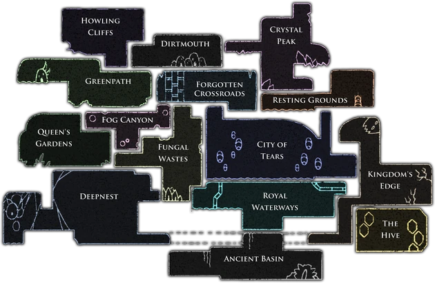

O mapa de Hollow Knight é vasto, interconectado e repleto de segredos. Ele representa o reino subterrâneo de Hallownest, dividido em diversas regiões únicas, como a Cidade das Lágrimas, Greenpath e Deepnest. Cada área possui sua própria atmosfera, inimigos e desafios. Inicialmente, o jogador não tem acesso ao mapa completo e precisa explorá-lo manualmente, encontrando o cartógrafo Cornifer em cada região para comprar partes do mapa. Essa mecânica incentiva a exploração e recompensa a curiosidade, tornando a jornada por Hallownest ainda mais envolvente.
Abaixo há mais informações
clique em um mapa para saber mais
